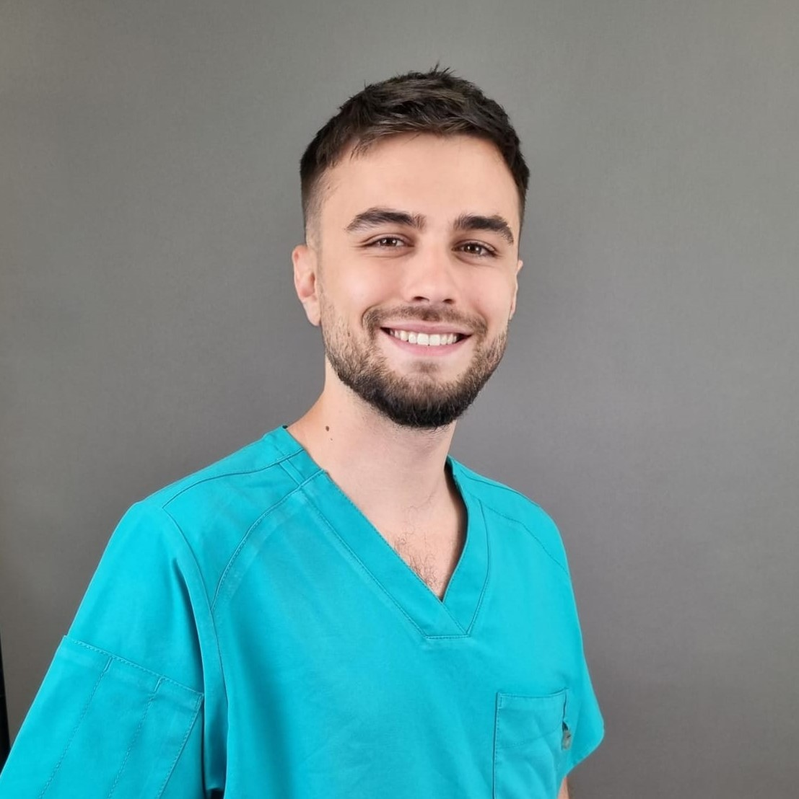

Întâlnește Echipa Noastră

Mihai Ionescu
Antrenor Personal, specializat în dezvoltarea musculară și planuri de antrenament personalizate.

Ana Popescu
Nutriționist certificat, expert în nutriția sportivă și echilibrul între alimentație și performanță.

Ioan Marinescu
Fizioterapeut, specializat în recuperarea post-antrenament și prevenirea accidentărilor.